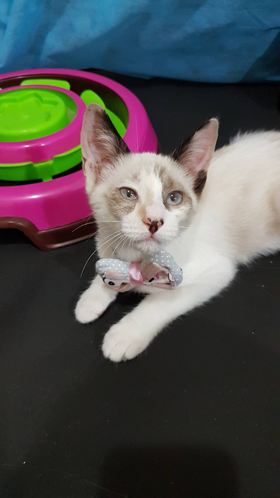
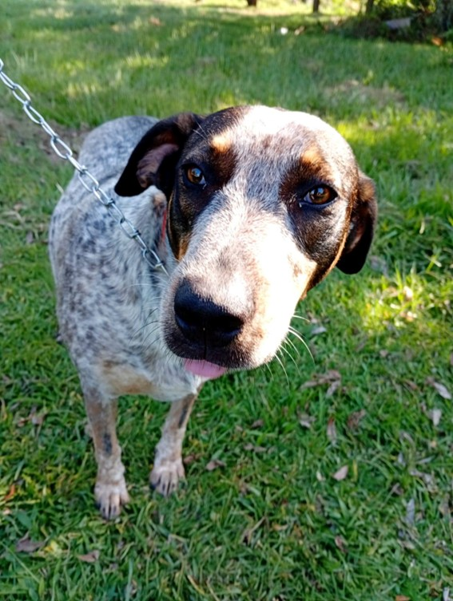

Max
Max é um cão carinhoso de 3 anos, resgatado das ruas. Ama brincar e está vacinado.

Luna
Luna é uma gatinha calma de 2 anos, castrada e muito amorosa. Procura um lar tranquilo.

Spike
Spike e um chachorro macho, achado nas ruas. Ele tem aproximadamente 2 a 3 anos, ele adora brincar e é carinhoso com crianças.